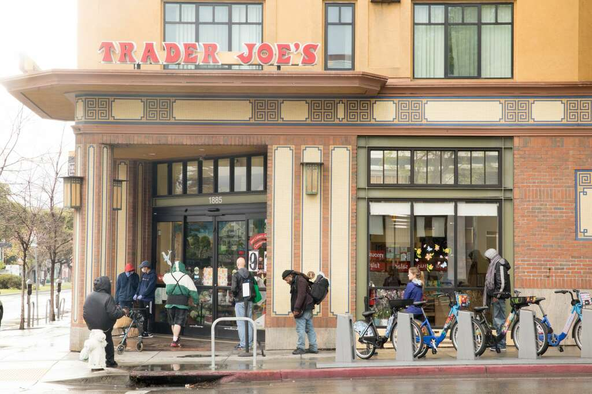
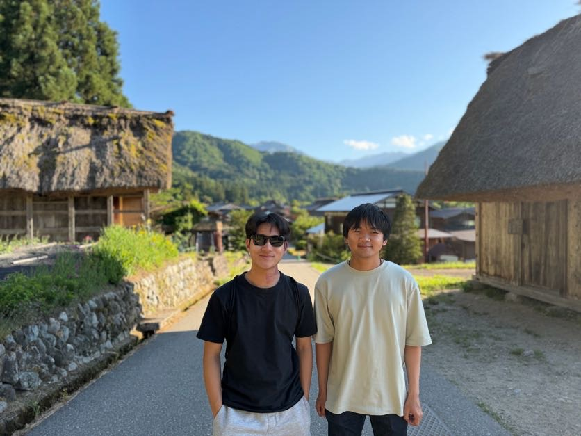

Lesson 2 · 장보기와 쇼핑
Before · Practice draft
An intentionally rough practice version created for comparison, not an original submitted draft.
요즘 Trader Joe’s 장 봅니다. 집에서 장 많이 안 해요. 엄마가 저 요리해서 때문입니다.
여행 때 쇼핑 많이 합니다. 지난 여름 일본 대만 갔어요. 친구하고 Uniqlo 가서 셔츠 두 개 바지 하나 샀다. 큰 옷 유행 있다. 엄마가 이 옷 저 잘 맞는 말했어요.
정장 오래 안 샀다. 인터뷰 정장 필요 있다. 고등학교 정장 지금도 입어요. 키 안 커서. 새 아파트 이사해서 Amazon 물건 많이 샀어요. 지난 학기 TV 비싸서 오래 TV 샀다. 새 집 TV 있어서 옛날 TV 팔아요.
Revised writing
요즘 Trader Joe’s에서 장을 봅니다. 집에 있을 때는 자주 장을 많이 안 봅니다. 왜냐하면 보통 엄마가 저를 요리해 때문입니다
여행할 때는 소핑 더 자주 합니다. 지난여름에 일본과 대만으로 여행을갔습니다. 여행하면서 옷 쇼핑 많이 했습니다. 요즘 유행은 넓은 바지와 넓은 셔츠이다. 일본에서는 이 유행 스타일 옷이 팝니다. 저는 친구와 옷을 사려고 Uniqlo에 갔습니다. 셔츠 두 벌과 긴 바지 한 벌을 샀습니다. 왠냐면 엄마가 재한테서 이스타일 잘 올렸 이야기 했습니다.
새런 정장 오랜만이 샀습니다. 정장 있것 중이다. 인터버에서 정장이 피로하다. 지금 고둥학교때 사는 정장이 아직 입었다. 그 이유는 고중학교부터 키가 안 컸업니다. 이번 학기에 새론 아팥으 이사해서 Amazon 소핑 많이했습니다. 지난 학기때 새론 태래비 바싼것 같타거 오래된 TV 사씁니다. 이번 집에 첨 이사와서 태래비 있서서 오래된 TV 파랐읍니다.

